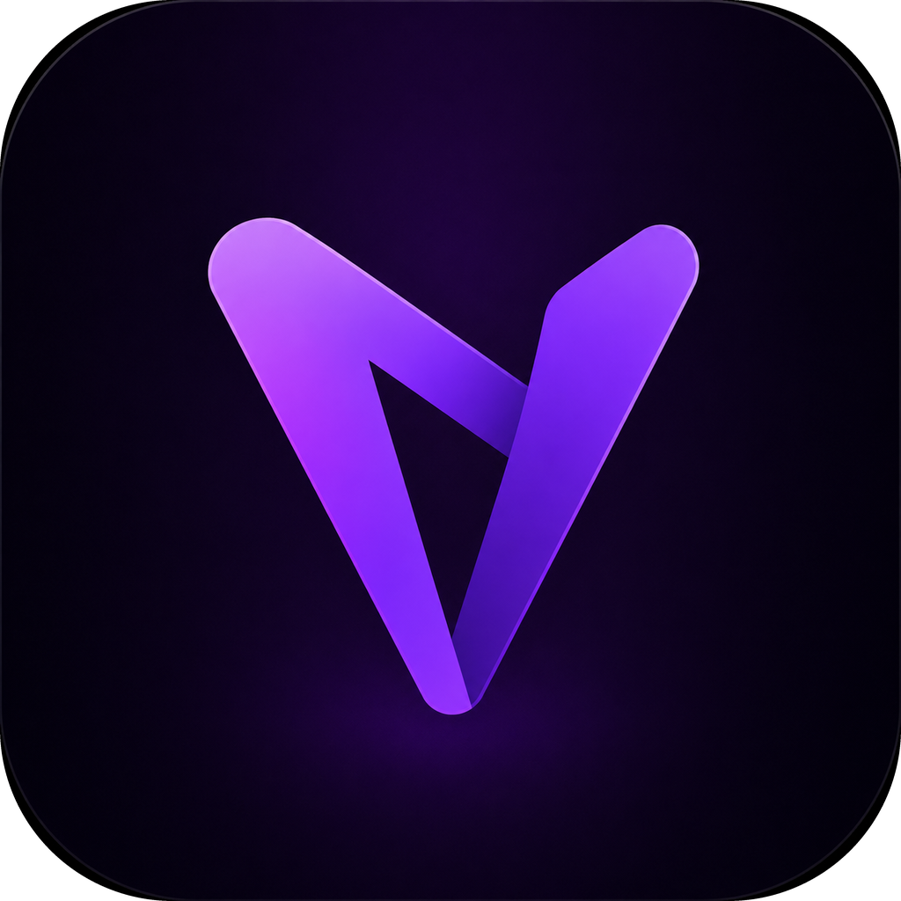

Auto game sessions
VodLink detects supported games, starts a YouTube Live broadcast, and records the session without making you babysit OBS scenes.

VodLinkOpen-source desktop recorder
VodLink detects supported games, opens a YouTube Live broadcast, streams through its private OBS runtime, and keeps a fast local library of the finished recordings.
What it does
VodLink detects supported games, starts a YouTube Live broadcast, and records the session without making you babysit OBS scenes.
The app initializes its own bundled libobs runtime and never touches your installed OBS Studio profile, scenes, plugins, cache, or settings.
A lightweight YouTube facade keeps the UI quick, then loads the real player only for the VOD you actually open.
Track YouTube clips and keep thumbnails fresh after streams finish, without swapping the UI when the image has not actually changed.
Quality
VodLink keeps the OBS canvas you select — including ultrawide resolutions — while advertising the closest higher YouTube tier by pixel count so weird resolutions do not get shoved into a lower playback ladder.
Optional backend
The included Cloudflare Worker only handles short-lived matching metadata. Video and audio still go from your machine directly to YouTube.
POST /start → open a session
GET /stop → close and match sessions
One start request, one stop request, short-lived D1 rows, and no custom video hosting.
Download a release build or inspect the source on GitHub.